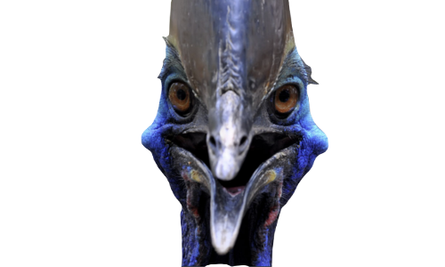
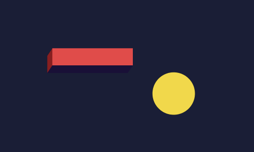

- story:
- 멸종된 새인 줄 알았던 고대의 새 '사밀리아루스'
- 그러나 그 새는 아마존 깊숙한 곳에서 그 명맥을 유지하고 있었다.
- 그 진실이 들어나고 얼마지나지 않아 전 세계의 희귀 동물 수집가들은
- 고대의 새를 박제하기 위하여 수 많은 사냥꾼을 고용한다.
- 그러나 '사밀리아루스'의 유일한 약점은 몰티져스를 먹는것.
- 몰티져스를 먹으면 즉사하고 만다.
- 지금 이 새를 도울 수 있는 자는 당신 뿐이다.
- 조작법:
- [space]를 눌러 날아 새를 죽이기 위해 날아오는
- 몰티져스들을 피하십시오.

- 설명:
- 옛날 윈도우의 버전이 낮았던 시절에는
- 화면이 켜진 채로 일정 시간이 지나면 화면 보호기가 켜졌습니다.
- 저는 그 때의 감성을 살리면서도 모던한 느낌을 주는 디자인을 통해
- 사용자에게 색다른 재미를 줄 수 있는 웹을 구상하였습니다.